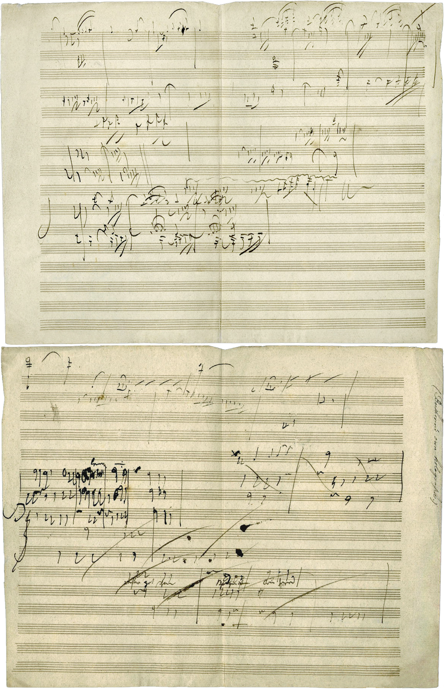

Music has changed significantly from the Medieval period to the modern era, eflecting changes in society, culture, and technology.
In medieval period, music was olny for worship, religious and monophonic, such as Gregorian chant, with free rhythm and Latin texts, and it was primarily used in churches for spiritual purposes
During the Renaissance, music became more complex with the introduction of polyphony, allowing multiple melodies to be heard at once
Baroque introduced greater contrast, more emotional and there's different imsturments. with the use of basso continuo and the creation of new forms such as opera, concerto, and fugue.
In classical period, composers focuse of structure, developing forms like the symphony and sonata, with clear melodies and balanced phrases.
The romantic period focuse on emotional expresson, story telling and use dramatic dynamics to convey personal feelings and imagination.
Moving to modern era, music became very diverse, exploring atonality, new rhythms, and innovative techniques, while also giving rise to jazz, rock, pop, and electronic music. The create of digital technology, such as recording, radio and even digital products. Allowed music to reach global and everyone can enjoy it.
music has not only changed in style but has remained a powerful way for people to express identity, emotion, and creativity across different cultures and time periods.
